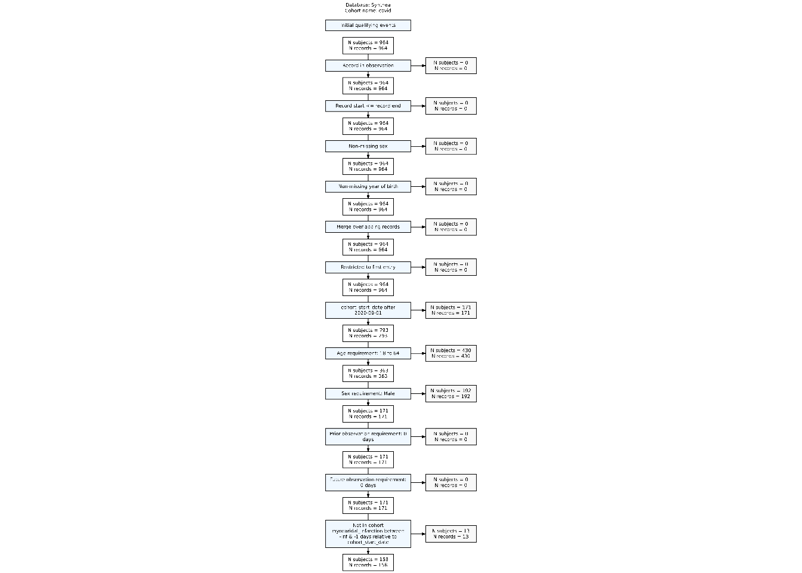

library(DBI)
library(duckdb)
library(CDMConnector)
library(CodelistGenerator)
library(CohortConstructor)
library(CohortCharacteristics)
library(dplyr)
db <- dbConnect(drv = duckdb(),
dbdir = eunomiaDir(datasetName = "synthea-covid19-10k"))
cdm <- cdmFromCon(db, cdmSchema = "main", writeSchema = "main")8 Adding cohorts to the CDM
8.1 What is a cohort?
When performing research with the OMOP common data model we often want to identify groups of individuals who share some set of characteristics. The criteria for including individuals can range from the seemingly simple (e.g. people diagnosed with asthma) to the much more complicated (e.g. adults diagnosed with asthma who had a year of prior observation time in the database prior to their diagnosis, had no prior history of chronic obstructive pulmonary disease, and no history of use of short-acting beta-antagonists).
The set of people we identify are cohorts, and the OMOP CDM has a specific structure by which they can be represented, with a cohort table having four required fields: 1) cohort definition id (a unique identifier for each cohort), 2) subject id (a foreign key to the subject in the cohort - typically referring to records in the person table), 3) cohort start date, and 4) cohort end date. Individuals can enter a cohort multiple times, but the time periods in which they are in the cohort cannot overlap. Individuals will only be considered in a cohort when they have have an ongoing observation period.
It is beyond the scope of this book to describe all the different ways cohorts could be created, however in this chapter we provide a summary of some of the key building blocks for cohort creation. Cohort-building pipelines can be created following these principles to create a wide range of study cohorts.
8.2 Set up
We’ll use our synthetic dataset for demonstrating how cohorts can be constructed.
8.3 General concept based cohort
Often study cohorts will be based around a specific clinical event identified by some set of clinical codes. Here, for example, we use the CohortConstructor package to create a cohort of people with Covid-19. For this we are identifying any clinical records with the code 37311061.
cdm$covid <- conceptCohort(cdm = cdm,
conceptSet = list("covid" = 37311061),
name = "covid")
cdm$covid# Source: table<covid> [?? x 4]
# Database: DuckDB 1.3.3-dev231 [unknown@Linux 6.11.0-1018-azure:R 4.4.1//tmp/Rtmp4rg4EO/file7b763ebf466c.duckdb]
cohort_definition_id subject_id cohort_start_date cohort_end_date
<int> <int> <date> <date>
1 1 4582 2020-11-16 2020-12-16
2 1 6451 2020-12-09 2021-01-10
3 1 5157 2021-02-01 2021-03-10
4 1 5165 2020-12-21 2021-01-06
5 1 8954 2020-07-15 2020-08-09
6 1 8345 2020-10-12 2020-10-26
7 1 8688 2020-12-11 2020-12-20
8 1 538 2020-05-19 2020-06-22
9 1 7740 2020-04-28 2020-05-29
10 1 9144 2021-01-05 2021-02-08
# ℹ more rows
Finding appropriate codes
In the defining the cohorts above we have needed to provide concept IDs to define our cohort. But, where do these come from?
We can search for codes of interest using the CodelistGenerator package. This can be done using a text search with the function CodelistGenerator::getCandidateCodes(). For example, we can have found the code we used above (and many others) like so:
getCandidateCodes(cdm = cdm,
keywords = c("coronavirus","covid"),
domains = "condition",
includeDescendants = TRUE)Limiting to domains of interest
Getting concepts to include
Adding descendants
Search completed. Finishing up.
✔ 37 candidate concepts identified
Time taken: 0 minutes and 1 seconds# A tibble: 37 × 6
concept_id found_from concept_name domain_id vocabulary_id standard_concept
<int> <chr> <chr> <chr> <chr> <chr>
1 3656667 From initia… Cardiomyopa… Condition SNOMED S
2 3661885 From initia… Fever cause… Condition SNOMED S
3 37310286 From initia… Infection o… Condition SNOMED S
4 703447 From initia… High risk c… Condition SNOMED S
5 3661406 From initia… Acute respi… Condition SNOMED S
6 37016927 From initia… Pneumonia c… Condition SNOMED S
7 1340294 From initia… Exacerbatio… Condition OMOP Extensi… S
8 3661631 From initia… Lymphocytop… Condition SNOMED S
9 3661632 From initia… Thrombocyto… Condition SNOMED S
10 3655973 From initia… At increase… Condition SNOMED S
# ℹ 27 more rowsWe can also do automated searches that make use of the hierarchies in the vocabularies. Here, for example, we find the code for the drug ingredient Acetaminophen and all of it’s descendants.
getDrugIngredientCodes(cdm = cdm, name = "acetaminophen")── 1 codelist ──────────────────────────────────────────────────────────────────
- 161_acetaminophen (25747 codes)Note that in practice clinical expertise is vital in the identification of appropriate codes so as to decide which the codes are in line with the clinical idea at hand.
We can see that as well as having the cohort entries above, our cohort table is associated with several attributes.
First, we can see the settings associated with cohort.
settings(cdm$covid) |>
glimpse()Rows: 1
Columns: 4
$ cohort_definition_id <int> 1
$ cohort_name <chr> "covid"
$ cdm_version <chr> "5.3"
$ vocabulary_version <chr> "v5.0 22-JUN-22"Second, we can get counts of the cohort.
cohortCount(cdm$covid) |>
glimpse()Rows: 1
Columns: 3
$ cohort_definition_id <int> 1
$ number_records <int> 964
$ number_subjects <int> 964And last we can see attrition related to the cohort.
attrition(cdm$covid) |>
glimpse()Rows: 6
Columns: 7
$ cohort_definition_id <int> 1, 1, 1, 1, 1, 1
$ number_records <int> 964, 964, 964, 964, 964, 964
$ number_subjects <int> 964, 964, 964, 964, 964, 964
$ reason_id <int> 1, 2, 3, 4, 5, 6
$ reason <chr> "Initial qualifying events", "Record in observati…
$ excluded_records <int> 0, 0, 0, 0, 0, 0
$ excluded_subjects <int> 0, 0, 0, 0, 0, 0As we will see below these attributes of the cohorts become particularly useful as we apply further restrictions on our cohort.
8.4 Applying inclusion criteria
8.4.1 Only include first cohort entry per person
Let’s say we first want to restrict to first entry.
cdm$covid <- cdm$covid |>
requireIsFirstEntry() 8.4.2 Restrict to study period
cdm$covid <- cdm$covid |>
requireInDateRange(dateRange = c(as.Date("2020-09-01"), NA))8.4.3 Applying demographic inclusion criteria
Say for our study we want to include people with a GI bleed who were aged 40 or over at the time. We can use the add variables with these characteristics as seen in chapter 4 and then filter accordingly. The function CDMConnector::record_cohort_attrition() will then update our cohort attributes as we can see below.
cdm$covid <- cdm$covid |>
requireDemographics(ageRange = c(18, 64), sex = "Male")8.4.4 Applying cohort-based inclusion criteria
As well as requirements about specific demographics, we may also want to use another cohort for inclusion criteria. Let’s say we want to exclude anyone with a history of cardiac conditions before their Covid-19 cohort entry.
We can first generate this new cohort table with records of cardiac conditions.
cdm$cardiac <- conceptCohort(
cdm = cdm,
list("myocaridal_infarction" = c(
317576, 313217, 321042, 4329847
)),
name = "cardiac"
)
cdm$cardiac# Source: table<cardiac> [?? x 4]
# Database: DuckDB 1.3.3-dev231 [unknown@Linux 6.11.0-1018-azure:R 4.4.1//tmp/Rtmp4rg4EO/file7b763ebf466c.duckdb]
cohort_definition_id subject_id cohort_start_date cohort_end_date
<int> <int> <date> <date>
1 1 1565 1975-03-28 1975-03-28
2 1 2180 2010-03-25 2010-03-25
3 1 4951 2007-01-09 2007-01-09
4 1 5036 1964-10-31 1964-10-31
5 1 7350 2014-05-15 2014-05-15
6 1 8804 1955-02-21 1955-02-21
7 1 9220 1963-09-14 1963-09-14
8 1 9810 2006-04-22 2006-04-22
9 1 10134 2013-04-01 2013-04-01
10 1 659 2009-12-26 2009-12-26
# ℹ more rowsAnd now we can apply the inclusion criteria that individuals have zero intersections with the table in the time prior to their Covid-19 cohort entry.
cdm$covid <- cdm$covid |>
requireCohortIntersect(targetCohortTable = "cardiac",
indexDate = "cohort_start_date",
window = c(-Inf, -1),
intersections = 0) Note if we had wanted to have required that individuals did have a history of a cardiac condition we would instead have set intersections = c(1, Inf) above.
8.5 Cohort attributes
We can see that the attributes of the cohort were updated as we applied the inclusion criteria.
settings(cdm$covid) |>
glimpse()Rows: 1
Columns: 8
$ cohort_definition_id <int> 1
$ cohort_name <chr> "covid"
$ cdm_version <chr> "5.3"
$ vocabulary_version <chr> "v5.0 22-JUN-22"
$ age_range <chr> "18_64"
$ sex <chr> "Male"
$ min_prior_observation <dbl> 0
$ min_future_observation <dbl> 0cohortCount(cdm$covid) |>
glimpse()Rows: 1
Columns: 3
$ cohort_definition_id <int> 1
$ number_records <int> 158
$ number_subjects <int> 158attrition(cdm$covid) |>
glimpse()Rows: 13
Columns: 7
$ cohort_definition_id <int> 1, 1, 1, 1, 1, 1, 1, 1, 1, 1, 1, 1, 1
$ number_records <int> 964, 964, 964, 964, 964, 964, 964, 793, 363, 171,…
$ number_subjects <int> 964, 964, 964, 964, 964, 964, 964, 793, 363, 171,…
$ reason_id <int> 1, 2, 3, 4, 5, 6, 7, 8, 9, 10, 11, 12, 13
$ reason <chr> "Initial qualifying events", "Record in observati…
$ excluded_records <int> 0, 0, 0, 0, 0, 0, 0, 171, 430, 192, 0, 0, 13
$ excluded_subjects <int> 0, 0, 0, 0, 0, 0, 0, 171, 430, 192, 0, 0, 13For attrition, we can use CohortConstructor::summariseCohortAttrition() and then CohortConstructor::tableCohortAttrition() to better view the impact of applying the additional inclusion criteria.
attrition_summary <- summariseCohortAttrition(cdm$covid)
plotCohortAttrition(attrition_summary, type = 'png')
9 Further reading
- …